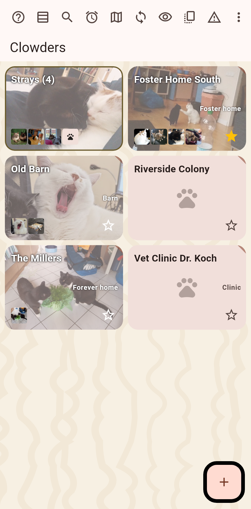
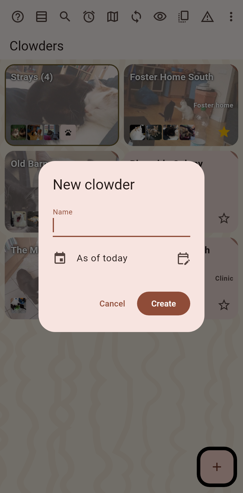
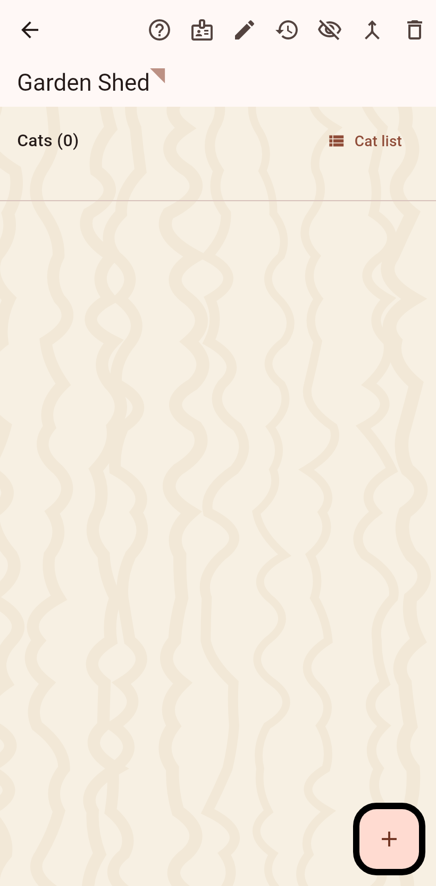
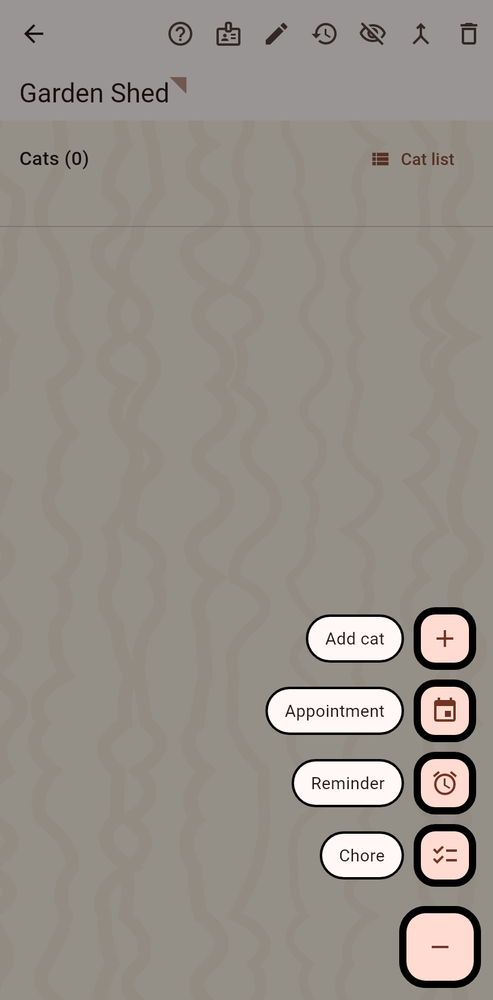
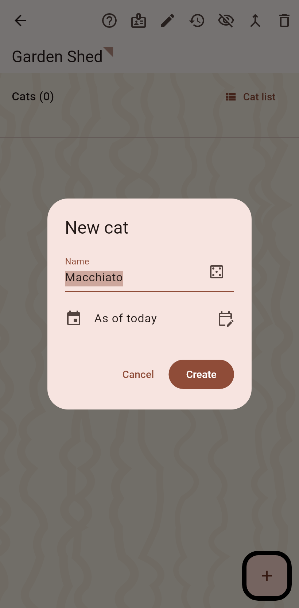
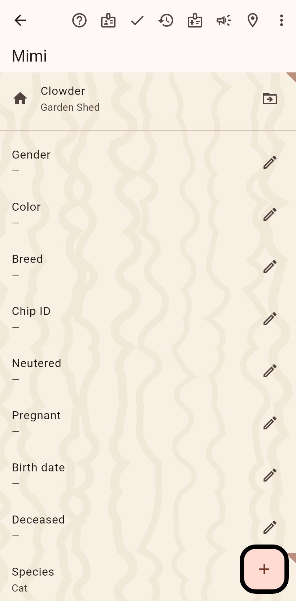

1. The home screen
Your clowders as cards. The button at the bottom right makes a new one.

2. Name the clowder
A dialog asks for the name; the date it counts from is today unless you set another. Create.

3. The clowder page
The new clowder opens, empty. Its fields are filled in by editing; the plus adds cats.

4. The ways to add a cat
The plus fans out: a new cat by hand, a photo taken now, one from the gallery, frames from a video.

5. Name the cat
A name is proposed; the dice throws another. Species is asked only in pet mode.

6. The cat page
The cat opens in edit mode: fields on the pen, photos on the plus. Done in the bar leaves edit mode.
